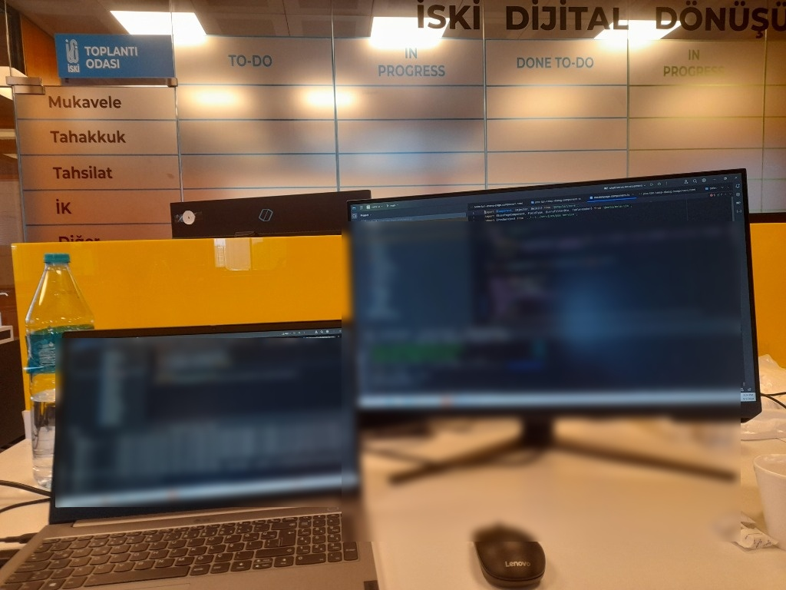
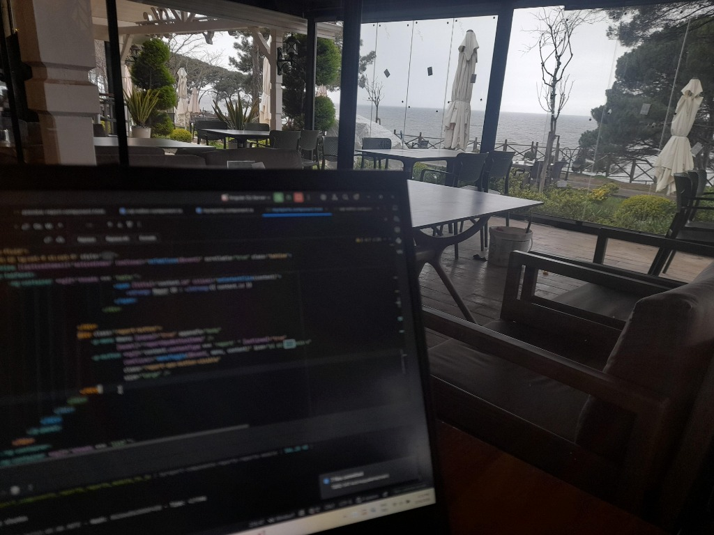

Fullstack Java geliştiricinin yol haritası
Java ile backend ağırlıklı fullstack geliştirici olmak için sıfırdan mimari seviyeye kadar adım adım öğrenilmesi gereken teknolojiler ve kapsamlı rehber.
Devamı ›
Java ile backend ağırlıklı fullstack geliştirici olmak için sıfırdan mimari seviyeye kadar adım adım öğrenilmesi gereken teknolojiler ve kapsamlı rehber.
Devamı ›
Yapay zeka konusunda RAG (Retrieval Augmented Generation) kullanarak bildiklerimi benim gibi söyleyen bir sistem tasarlayabildim.
Devamı ›
Özetle yapay zekâya karşı değilim, yapay zekâ ile kendimizi geliştirmek yerine kontrolü yapay zekâya devretmeye karşıyım. 4 yıllık eğitimcilik ve 10 yıllık geliştiricilik tecrübesiyle sektör analizi.
Devamı ›
Spring Boot MVC, Hibernate ORM, Spring Security ve Thymeleaf kullanarak sıfırdan modern bir blog sitesi iskeleti oluşturma, entity ve repository mimarisi.
Devamı ›
Bu yazıda Java 'da genellikle gözden kaçan ama arka planda önemli bir yer tutan Servlet mimarisini ve kurumsal istek-yanıt döngüsünü ele alıyorum.
Devamı ›“Söz dünyayı değiştirir, sükut seni.”
Merhaba, ben Ömer Faruk Balcı. Düzce Üniversitesi Bilgisayar Mühendisliği bölümünden üstün başarı göstererek 1 dönem erken mezun oldum. Kariyerim boyunca Triodx Yazılım bünyesinde belediyeler için Yapay Zekâ (AI) Destekli İş Zekâsı (BI) dashboard ve dinamik analitik raporlama uygulamalarının mimarisini kurgulamaktan, Universal Yazılım ile İSKİ projesinde kurumsal full-stack modüller geliştirmeye ve GISoft'ta Coğrafi Bilgi Sistemleri (CBS/GIS) optimize etmeye kadar geniş bir yelpazede kritik sorumluluklar üstlendim.
Kurumsal karar vericiler için anlık veri akışı, öngörüsel modelleme, dinamik rapor filtreleri ve modern kullanıcı deneyimi odaklı gösterge panelleri.
Java EE, Spring Boot, Spring Security, Hibernate, PostgreSQL, Redis önbellekleme ve RabbitMQ kuyruklarıyla kesintisiz mikroservis çözümleri.
GeoServer mekânsal veri entegrasyonu ve Düzce Robotaksi Kurucu Üyeliğinden gelen analitik ve algoritmik problem çözme yaklaşımı.
Yapay zekâ destekli analizlerden dağıtık mimarilere uzanan temel uzmanlık alanlarım.


Kamu kurumları, belediyeler ve kurumsal yazılım projelerinde üstlendiğim roller.
Belediyeler ve yerel yönetimler için uçtan uca modern yazılım ürünleri geliştirme; karar destek süreçlerini dönüştüren Yapay Zekâ Destekli İş Zekâsı (BI) gösterge panelleri (dashboards) ve analitik raporlama sistemlerinin mimarisini kurgulama ve hayata geçirme.
Sivil toplum kuruluşları ve dernekler için yönetim yazılımlarının geliştirilmesi; operasyonel karar alma süreçlerini kolaylaştıran idari arayüzler ve yönetim raporlama modülleri.
İstanbul Su ve Kanalizasyon İdaresi (İSKİ) kurumsal dijital dönüşüm projesine Full-Stack Geliştirici olarak katkı sunulması; kritik ölçekteki Personel Yönetim Modülünün mimarisi ve geliştirmeleri.
Belediyeler için kentsel planlama ve mekânsal veri yönetimini optimize eden ileri düzey Coğrafi Bilgi Sistemleri (CBS / GIS) çözümlerinin geliştirilmesinde öncülük.
Güçlü nesne yönelimli programlama (OOP) ilkeleriyle sağlam ve güvenli ödeme işleme yazılım çözümlerinin geliştirilmesi ve entegrasyonu.
Üstün akademik başarı göstererek üniversiteyi 1 dönem erken tamamlama. Algoritma tasarımı, veri tabanı mimarileri ve sistem entegrasyonu projeleri. Düzce Üniversitesi Robotaksi Takımı Kurucu Üyesi olarak otonom sürüş ve algoritmik sistemler üzerine çalışmalar.
AI & BI Dashboard
Belediye ve kurumsal veriler için yapay zekâ destekli öngörüler, interaktif metrik filtreleme, dinamik gösterge panelleri ve otomatik analitik raporlama motoru.
GitHub Adresimi İncele
Kurumsal KamuİSKİ bünyesinde binlerce personelin süreç yönetimini, izin ve yetkilendirme akışlarını yöneten güvenli, katmanlı ve yüksek transactional kurumsal modül.
GitHub Adresimi İncele GIS & Harita
GIS & Harita
Belediyelerin kentsel planlama ve altyapı yönetim süreçlerinde kullanılan mekânsal veri katmanları, harita servisleri ve CBS optimizasyon çözümü.
GitHub Adresimi İncele
Full-Stack SPA
Araç bakım süreçleri, yedek parça envanteri ve müşteri randevularını modüler yapıda yöneten tek sayfa (SPA) uygulaması.
GitHub Adresimi İncele Kurumsal Mimari
Kurumsal Mimari
SOLID prensipleri ve N-Tier mimarisiyle veri erişimi (DAL), iş mantığı (BLL) ve sunum katmanlarını izole eden kurumsal çözüm.
GitHub Adresimi İncele
Core Backend
Java EE & Spring standartlarında iş katmanı (BLL); Oracle SQL prosedürleri, optimize transactional sorgular ve veri akışı.
GitHub Adresimi İnceleKurumsal projeler, teknoloji fuarları ve üretkenliği besleyen anlar.
Büyük ölçekli kurumsal kamu altyapılarında çift ekran geliştirme, modüler servisler ve kurumsal süreç entegrasyonları.
Düzce Robotaksi kurucu üyeliğinden fuarlara uzanan donanım-yazılım, yapay zekâ ve otonom sistem merakı.

Odak & İlhamDoğanın sakinliğinde zihni dinlendirerek temiz mimariler ve yaratıcı algoritmalar tasarlama.
Teknolojideki hızlı değişimleri yakından izleyerek kendini her yeni günde tazeleyen mühendislik yaklaşımı.
Yapay zekâ, kurumsal yazılım mimarileri, BI analiz panelleri veya açık kaynak ekosistemi üzerine fikir alışverişinde bulunmak ya da profesyonel bir merhaba demek için aşağıdaki kanallardan dilediğiniz an yazabilirsiniz.